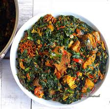

Efo Riro Recipes

Description
Here is a nice and delicious soup in Nigeria mostly popular with its name Efo Riro, among the Yoruba tribe.
This recipe will explain how you can make simple Efo riro with all the required ingredients.
Ingredients
- Bunches of green vegetables(Efo Shoko)
- Red bell peppers(Tatashe)
- Scotch bonnet chillies
- Onions
- Palm oil
- Locust beans (Iru woro)
- Dried shawa/palamu (dried smelt fish)
- Smoked mackerel
- Smoked ponmo, washed and diced
- Ground crayfish
- Salt
- Seasoning
Steps
I used smoked dried ponmo for this recipe, you can also use fresh ones if you want. If you are using the dried ones, soak them in warm water for at least 36-48 hours. Wash ponmo clean (use clean wired scourers for an easier job) and set aside
- Pick the vegetable from the stalk and slice into chunks
- Rinse vegetable clean, drain and set aside
- Wash locust beans and set aside
- Chop 1 onion and set aside
- Shred the smoked fish into flakes and also set aside
- Roughly chop the bell pepper (tatashe) and onions, add to a blender and pulse for coarse texture (alternatively, use a food processor for perfect coarse texture)